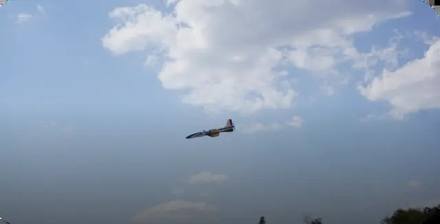
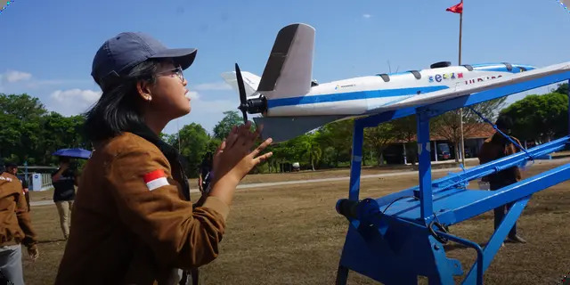
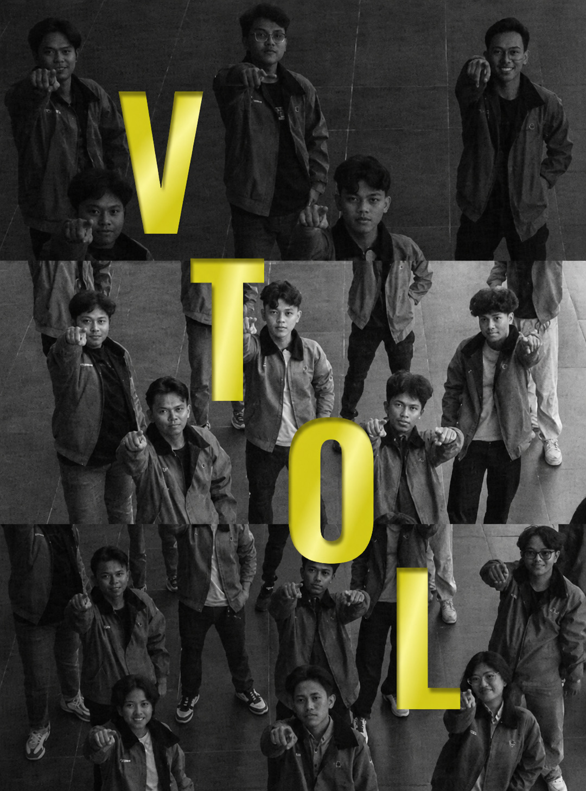
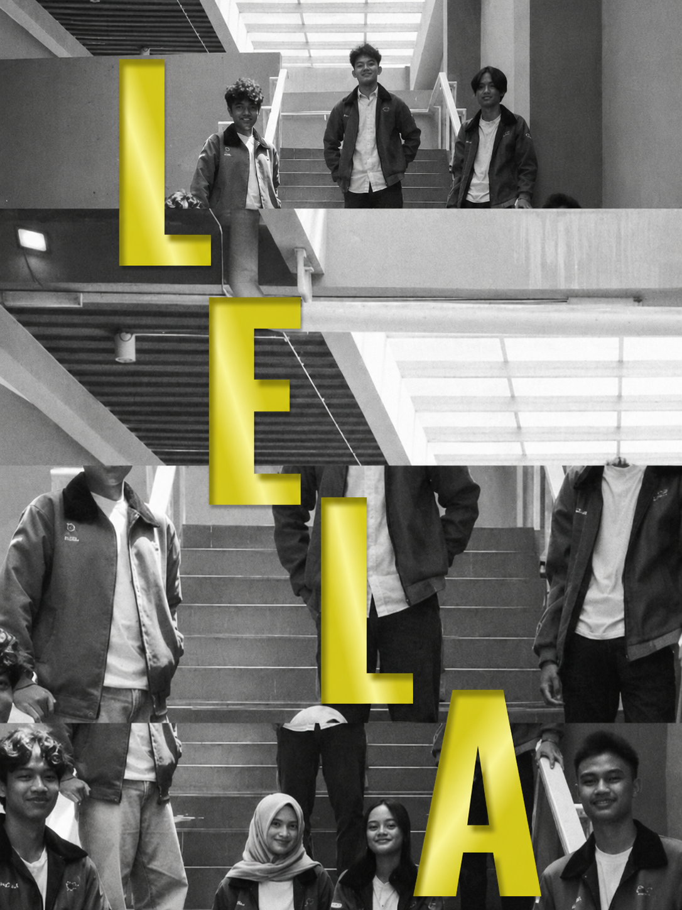
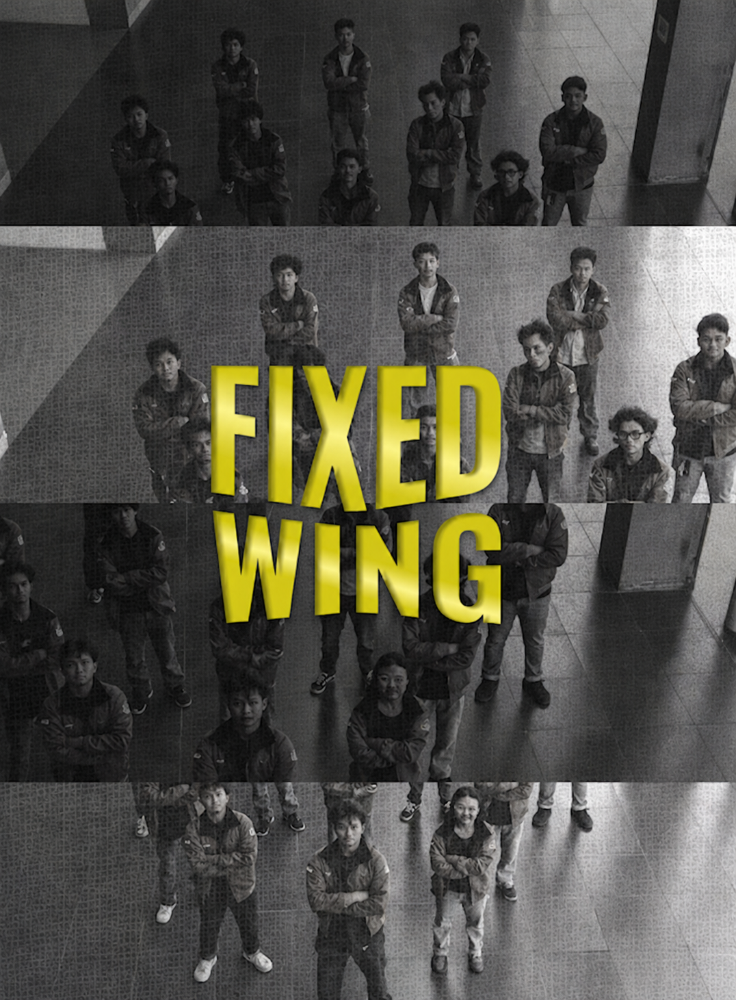
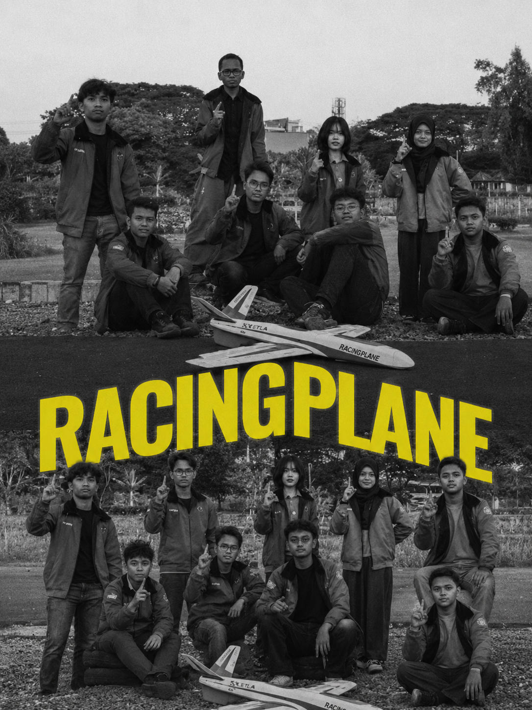
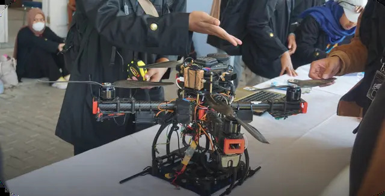

Breaking Boundaries, Inspiring the Future Through UAV Innovation at Sepuluh Nopember Institute of Technology.

The name Bayucaraka ITS is taken from the Sanskrit 'Vāyu' which means air and 'Caraka' which means wanderer. Overall, the name Bayucaraka ITS means Air Nomad through innovative work and research in the field of UAV (Unmanned Aerial Vehicle).

Click a team to see details.

Vertical Take-Off and Landing Built for versatility in every environment. Combining flexibility, precision, and adaptability in a single platform.

Long Endurance Low Altitude Built to fly longer and observe closer. Delivering endurance and efficiency for smarter UAV missions.

Fixed Wing Engineered for stability and endurance. Transforming precision into reliable flight performance.

Racing Plane Where speed meets precision. Turning control, agility, and engineering into performance.

This team also has the hashtag #GarudakuJayaSelalu which means the Bayucaraka Team is ready to continue to bring glory to the skies of Indonesia through their work and research.